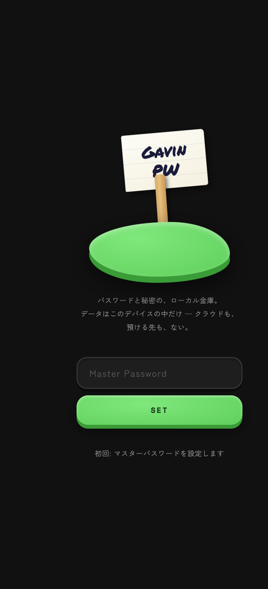
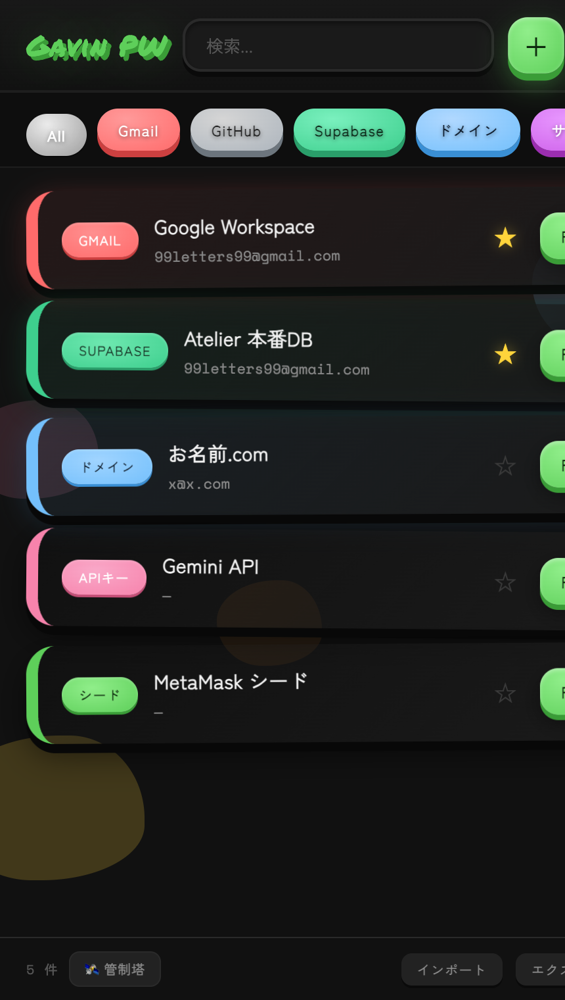
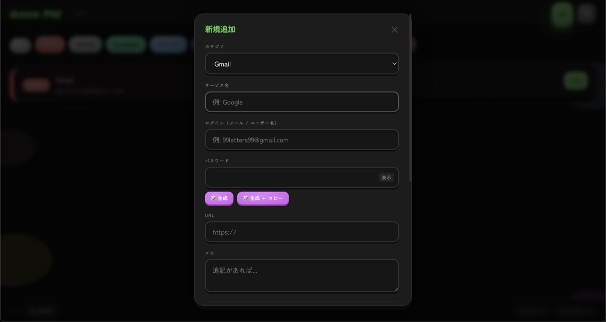
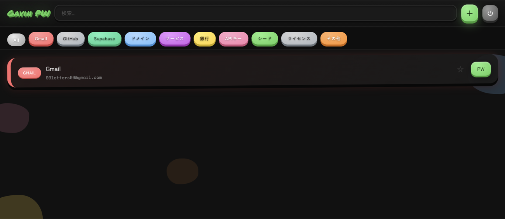
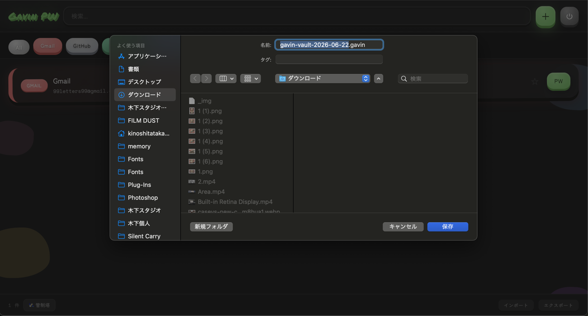

パスワードと秘密のためのローカル金庫。そして、自分のデジタルインフラを一望する管制塔。クラウドに預けない。サーバーを持たない。
完全ローカル · 外部送信ゼロ · 無料

ただ鍵をしまう場所ではない。自分の秘密と、それが支えるインフラの全体を、自分の手元だけで把握する。
マスターパスワードで AES-GCM 暗号化。データはこのデバイスの中だけに保存され、サーバーへ送られることはない。
どのプロダクトが、どのサービスに依存しているか。鍵の束を「自分のインフラ地図」として俯瞰し、何が止まると何が死ぬかが分かる。
パスワードだけでなく、API キー・シードフレーズ・ライセンス・復旧コードまで。散らばった秘密を一箇所に。
ドメインやトークンの失効が近づくとアラート。お気に入りで、よく使う主要な資産をいつも最前面に。
大手はあなたのパスワードをクラウドに「預かる」。Gavin は預からない——預ける先が存在しないから、漏れる先もない。
単一の HTML ファイル。コードは誰でも読める。外部への通信はゼロ。ブラックボックスを信じる必要がない。
アカウント登録なし。月額なし。あなたの秘密の主権は、最後まであなたの手の中にある。
各クレデンシャルに「どのプロダクトで使い、どんな役割で、いつ失効するか」を紐づける。すると金庫は、自分のデジタル資産を一望する管制塔になる。
「お名前.com が止まると、何が死ぬか」——その問いに、一目で答えられる。

開いて、秘密を入れて、自分のクラウドへ。アカウント登録も同期サーバーもいらない。
カテゴリを選び、サービス名・ログイン・パスワードを入力。「生成」で強いパスワードをその場で作れる。
パスワードだけでなく、API キー・シードフレーズ・ライセンスも同じ要領で。すべてマスターパスワードで暗号化される。

カテゴリで絞り込み、★でよく使う鍵をいつも最前面に。失効が近い資産は自動でアラート。
ボトムバーの「管制塔」に切り替えれば、どのプロダクトが何に依存しているか——自分のインフラ地図を一望できる。

「エクスポート」で暗号化された .gavin ファイルを書き出す。iCloud Drive や Dropbox に置いておけば、別の端末で「インポート」して読み込める。
クラウドに渡るのは暗号文だけ。マスターパスワードはこのデバイスから一歩も出ない——預ける先がないから、漏れる先もない。
